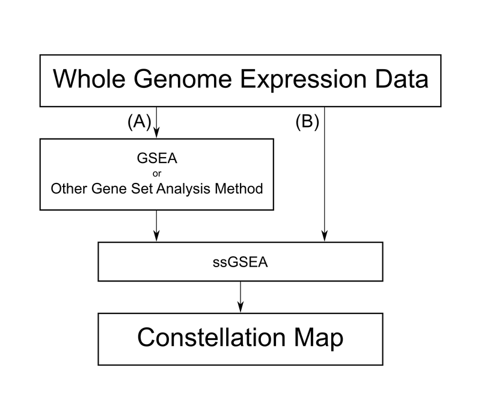

ConstellationMap, v1.4.x 
A downstream visualization and analysis tool for gene set enrichment results with interactive web visualizer, to be run on the GenePattern platform.
Author: Felix Wu;Broad Institute
Contact: gp-help@broadinstitute.org
Algorithm Version: 1.2
Introduction
ConstellationMap helps leverage the full power of a gene set enrichment analysis by identifying commonalities between high-scoring gene sets and mapping their relationships. ConstellationMap visualizes in an interactive web application the enrichment profile similarity and gene member overlap of gene sets, which are positively or negatively enriched in relation to a phenotype in a two-class or continuous-class comparison. It uses provided enrichment scores (e.g., those generated by ssGSEAProjection) to estimate normalized mutual information (NMI) scores and project top scoring sets onto a circular plot with the following features:
(1) Gene sets are represented as nodes with radial distance to the center reflecting positive or negative enrichment in the phenotype, whichever direction is specified. Higher associations for the correlation direction are plotted closer to the center.
(2) Member gene overlaps between sets are represented as edges connecting nodes with thickness proportional to degree of overlap.
(3) The angular distance between nodes is relatively proportional to the similarity of their enrichment profiles, i.e. more similar enrichment patterns have a smaller angular distance.
See the video tutorial: Using the Constellation Map Visualizer
See the F1000Research paper (Tan Y, Wu F, Tamayo P et al., 2015): PubMed (http://www.ncbi.nlm.nih.gov/pubmed/26594333), DOI (10.12688/f1000research.6644.1)
Web interactive features allow export of selected overlapping gene symbols for annotation in DAVID, MSigDB, and GeneMania. Click on the output file Visualizer.html to open the interactive ConstellationMap plot from the Jobs Tab.
- Use mouse click on the web visualization to select a node or an edge. Use shift+click, or click-drag to select a group of features.
- Selection displays gene set names, number of genes in the set, number of sets used to compute overlap, and overlapping member gene symbols.
- Adjust number of nodes in highlighted area for which to display the maximum number of overlapping gene symbols.
In addition to the web application, ConstellationMap outputs two static plots: (1) a positive red to negative blue heat map of per sample enrichment of the gene sets ranked by NMI scores as well as Area Under the Curve (AUC) and t-test metrics along with corresponding p-values, and (2) a constellation map marking the phenotype of interest in the center in red, concentric contour arcs marking association to the phenotype (as measured by NMI), nodes as numbered open circles, overlap as green lines, and a key of the numbered gene sets.
Example Workflows
Users may input gene set enrichment data produced by any algorithm as long as it is in GCT format, as well as any gene set collection in GMX or GMT format. For convenience, GenePattern modules including ConstellationMap provide MSigDB gene set collection files from a drop-down menu. The two module workflow examples presented here both use outputs from GenePattern’s ssGSEAProjection module as inputs to ConstellationMap. Workflow (A) uses ssGSEAProjection only on user-specified enriched sets, e.g. those previously identified from another analysis, while Workflow (B) uses enrichment rankings computed by ssGSEAProjection on the expression dataset in ConstellationMap. Users may choose Workflow (A) if they have a preferred method (e.g., GSEA) for identifying gene sets highly associated with a phenotypic class. If users do not have a preferred method, then they may use Workflow (B), which uses NMI to identify highly associated gene sets. See the following figure for a visual representation of the two workflows.

Workflow (A)
Whole Transcriptome Expression Data → GSEA (or other gene set analysis method) → ssGSEAProjection → ConstellationMap
- From a gene set enrichment analysis result using an expression dataset and a preferred gene set collection, e.g. a GSEA module analysis of RNA-Seq expression data using MSigDB’s C3 Motifs Collection, identify a group of interesting gene sets. For example, all gene sets that GSEA identified as highly enriched based on an FDR cutoff of 0.25. Organize the names of these gene sets exactly as they appear in the gene set collection into a comma-separated list without spaces
- Run the ssGSEAProjection module with the following parameter settings:
- input gct file: expression dataset used in step (1)
- gene sets database (file): the same file or contains the same gene sets used in step (1) in GMX or GMT format
- gene set selection: comma-separated list of interesting gene sets
- combine mode: combine.off
- Run the ConstellationMap module with the following parameter settings:
- input gct file: output from ssGSEAProjection in step (2)
- input cls file: same as used in the example GSEA analysis of step (1)
- gene sets database (file): same as used in step (2)
- top n: set to a number equal to or less than the number of interesting gene sets inputted at step (2c)
Workflow (B)
Whole Transcriptome Expression Data → ssGSEAProjection → ConstellationMap
- Run the ssGSEAProjection module with the following parameter settings:
- input gct file: expression dataset
- gene sets database (file): select an MSigDB collection from the drop-down menu or provide a GMX or GMT file of gene sets
- gene set selection: ALL
- combine mode: combine.off
- Run the ConstellationMap module with the following parameter settings:
- input gct file: output from ssGSEAProjection in step (1)
- input cls file: CLS file containing two categorical phenotypes or continuous phenotypes
- gene sets database (file): same as used in step (1)
- top n: set to a number equal to or less than the number of gene sets ssGSEAProjection identifies to be associated with the phenotype in the given direction (i.e., positive or negative).
For gene set collections that do not utilize _UP and _DN suffixes at the ends of set names, the combine mode parameter option is irrelevant as all the modes give the same output.
As of MSigDB v5.0, released March 2015, four collections contain gene sets with _UP and _DN suffixes. These are C2.all, C2.CGP, C6.all, and C7.all. Some gene sets, including many in MSigDB, are derived from previous gene expression studies with up-regulated and down-regulated genes divided into separate gene sets denoted by an _UP or _DN suffix appended to otherwise identical set names. The ssGSEAProjection module can recombine these paired sets and calculate a combined enrichment score for each pair. See ssGSEAProjection module documentation for more information.
For gene set collections that utilize _UP and _DN suffixes, set ssGSEAProjection parameter combine mode to combine.off. Do not use the other two options, combine.add or combine.replace, as they create new combined gene sets that lack either suffix and which are not represented in the input gene set collection unless you will be providing ConstellationMap with a gene set collection that includes the new combined gene sets. ConstellationMap requires that the gene sets specified in the input GCT file match a subset of the gene sets provided.
- Combine.replace replaces the original paired gene sets with a new combined gene set and thus reduces the number of gene sets in the output by half the paired sets.
- Combine.add mode keeps the original paired sets and independent scores and adds the new combined set with combined score to the output GCT file, increasing the number of gene sets by the number of paired sets.
Note: while the upstream GSEA, GSEAPreranked, and ssGSEAProjection modules all permit selection of multiple gene set files, this is not supported by ConstellationMap at this time. As a workaround, you can combine the gene set files by hand and upload the single combined file.
Algorithm
Constellation Map operates on the provided gene set enrichment scores, estimating the probability density functions of gene set and phenotypic class variables using kernel density estimation. These density functions are subsequently used to calculate normalized mutual information (NMI) scores for each gene set, which capture the association between each gene set’s enrichment scores and phenotypic classes (Eq. 3). Since NMI scores do not inherently contain information on direction of association, we apply the sign of the Pearson correlation (Eq. 4).
Next, the top N NMI-scoring gene sets are selected for projection onto the circular space. NMI scores are calculated pairwise across the N gene sets quantify the similarity between their enrichment profiles. These pairwise NMI scores are converted into dissimilarity scores, d = 1 − NMI, which has been mathematically proven to be a true distance metric. An N-by-N distance matrix D is constructed containing these pairwise distances d.
The circular Constellation Map plot is built using the multidimensional scaling projection R package SMACOF version 1.5–0. An angular distance matrix Δ is calculated by minimizing the objective function (Eq. 5), where δij is the angular distance and dij is the original distance (stored in D) between gene sets i and j. The gene sets are plotted as points distributed about the origin. Angular distance between two gene sets is determined from Δ and is proportional to the similarity of the gene sets’ enrichment profiles. Radial distance (i.e., distance to the origin) indicates the gene set’s association with respect to the phenotype (1 – NMI).
To provide context of gene overlap between sets, pairwise Jaccard indices are calculated across the gene sets. (The Jaccard index is equal to the number of genes shared by two sets divided by the number of genes in their union.) For pairs with Jaccard indices greater than a given threshold, edges are drawn connecting the respective nodes; the thickness of each edge is proportional to the Jaccard index.

References
- Barbie,D.A. et al. (2009) Systematic RNA interference reveals that oncogenic KRAS-driven cancers require TBK1. Nature, 462, 108–112.
- Dennis,G. et al. (2003) DAVID: Database for Annotation, Visualization, and Integrated Discovery. Genome Biol., 4, P3.
- Grossmann,S. et al. (2007) Improved detection of overrepresentation of Gene-Ontology annotations with parent child analysis. Bioinformatics, 23, 3024–3031.
- Jaccard,P. (1901) Étude comparative de la distribution florale dans une portion des Alpes et des Jura. Bulletin de la Société Vaudoise des Sciences Naturelles, 37, 547–579.
- Leeuw,J.d. and Meir,P. (2009) Multidimensional Scaling using Majorization: SMACOF in R. J. Statist. Software, 31, 1–30.
- Subramanian,A. et al. (2005) Gene set enrichment analysis: a knowledge-based approach for interpreting genome-wide expression profiles. Proc. Natl. Acad. Sci. USA, 102, 15545–15550.
- Tan,Y. et al. (2014) Gene signatures related to B-cell proliferation predict influenza vaccine-induced antibody response. Eur. J. Immunol., 44, 285–295.
- Tan,Y. et al. (2015) Constellation Map: Downstream visualization and interpretation of gene set enrichment results. F1000Research, 4, 167.
- Vinh,N.X. et al. (2010) Information theoretic measures for clusterings comparison: variants, properties, normalization and correction for chance. J. Mach. Learn. Res., 11, 2837–2854.
Parameters
| Name | Description |
|---|---|
| input gct file * |
This is a tab-delimited text file in GCT format containing gene set enrichment data outputted from an ssGSEAProjection (single sample gene set enrichment analysis projection) module job. ConstellationMap assumes that the input GCT file is a gene set enrichment file outputted by an ssGSEAProjection module job. Rows should correspond to gene sets while columns should correspond to sample names. The gene sets specified in the GCT file must be a subset of the gene sets listed in the accompanying gene sets database or gene sets file (see below). |
| input cls file * | A space-delimited text file in CLS format containing two-phenotype categorical labels (e.g., tumor vs. normal) or continuous phenotype labels (e.g., time series). For each sample in the corresponding expression dataset the CLS file assigns a label or numerical value for the phenotype. |
| gene sets database |
This drop-down menu allows you to select gene sets from the Molecular Signatures Database (MSigDB) on the GSEA website. This menu provides access to collections from MSigDB version 5.0. If you want to use files from an earlier version of MSigDB, you will need to download that file from the archived releases on the website and specify it in the gene sets file parameter. You can also upload a gene set file in GMT or GMX format. Provide your gene set file here if it is unavailable from the drop-down menu. Note: while the upstream GSEA, GSEAPreranked, and ssGSEAProjection modules all permit selection of multiple gene set files, this is not supported by ConstellationMap at this time. As a workaround, you can combine the gene set files by hand and upload the single combined file. |
| gene sets file | A gene set file in GMT or GMX format. Provide your gene set file here if it is unavailable from the drop-down menu under gene sets database. |
| top n * | This is a positive integer indicating the number of top NMI-scoring gene sets to display in the final plot. This parameter must be greater than 2 but less than or equal to the total number of enriched gene sets. |
| direction * |
This drop-down menu allows you to select the direction of correlation, “positive” or “negative”, in which ConstellationMap will investigate association to the target class. If “positive” is chosen then gene sets that are more positively associated with the target class will be placed closer to the center in the resulting radial plot. If “negative” is chosen then gene sets that are more negatively associated with the target class will be placed closer to the center in the resulting radial plot. Default: “positive” |
| image format * |
This drop-down menu allows you to select an image format for the outputted static plot and heat map, either PNG (raster graphics) or PDF (vector graphics). Default: “PNG” |
| jaccard threshold * |
This is a number between 0 and 1 indicating the Jaccard Index threshold above which connecting edges between gene sets will be drawn in the resulting plot. ConstellationMap measures the overlap between all gene set pairs using a Jaccard Index metric. The Jaccard Index is equal to the number of genes in the intersect of the two sets divided by the number of genes in their union. Edges are drawn between gene set pairs if their Jaccard Index is greater than the threshold parameter given here. This affects both the static and interactive plots. Default: 0.1 |
| target class |
This is a phenotype label, indicating the phenotypic category against which ConstellationMap will measure the association of various gene sets based on their enrichment. In the outputted visualization, target class will be plotted in the center of the radial plot. This parameter must match one of the two phenotype labels specified in the second line of the input cls file. If this parameter is left blank, ConstellationMap will default to the first listed phenotype label in the input cls file. |
* - required
Input Files
- input gct file
Gene set enrichment data file in GCT format. Each row of the GCT file matrix should represent a gene set while each column should represent a sample. Each matrix element should contain an enrichment score indicating the degree to which the given gene set’s members are coordinately up- or down-regulated in the given sample. Output from the ssGSEAProjection module can be directly input into ConstellationMap. - input cls file
Class designation file in CLS format. - gene sets file or database
Gene sets file in GMT or GMX format provided by the user or drawn from MSigDB by selection from the pull-down menu.
Output Files
- Visualizer.html
This is an interactive in-browser plot powered by JavaScript. Open this link in a new tab to view the ConstellationMap radial plot. This visualizer allows users to quickly identify and annotate overlapping genes and interrogate gene set clusters. Metadata such as Jaccard indices and coordinates are quickly made available.When saving a ConstellationMap job to the GenePattern file system, users should ensure that Visualizer.html resides in the same folder as the two accompanying ODF files in order to continue using the visualizer.
This is the preferred method for visualizing ConstellationMap results. - <input.gct.file>.<gene.sets.file>.<target.class>.HEATMAP.png or <input.gct.file>.<gene.sets.file>.<target.class>.HEATMAP.pdf
This image is a heat map of the top n NMI-scoring gene sets in either PNG or PDF format, depending on the chosen image format parameter.
Rows denote gene sets ranked by NMI score while columns denote samples. Cell colors from red (positive) to blue (negative) indicate ssGSEA enrichment scores. NMI, AUC, AUC p-values, t-test scores, and t-test score p-values for each gene set appear to the right. The horizontal yellow and purple bar at the top indicate the two different phenotypic classes. - <input.gct.file>.<gene.sets.file>.<target.class>.REPORT.txt
This is a tab-delimited text file containing calculated statistical metrics for the top n NMI-scoring gene sets.
- NMI: Normalized mutual information.
- AUC: Area under the curve.
- AUC.pval: Area under the curve p-value.
- t.stat: t-statistic.
- t.pval: t-statistic p-value.
- <input.gct.file>.<gene.sets.file>.<target.class>.CONSTELLATION_MAP.png or <input.gct.file>.<gene.sets.file>.<target.class>.CONSTELLATION_MAP.pdf
This is a static image of the ConstellationMap radial plot in either PNG or PDF format, depending on the chosen image format parameter. - ConstellationMap.plot.data.nodes.odf
This is a tab-delimited text file in ODF format that contains data on node coordinates as well as metadata (e.g., gene set membership, filenames) for plotting by Visualizer.html. - ConstellationMap.plot.data.edges.odf
This is a tab-delimited text file in ODF format that contains data on edge locations as well as metadata (e.g., Jaccard Indices, filenames) for plotting by Visualizer.html.
Requirements
Supported Browsers
| Mozilla Firefox: | v4–46 |
| Google Chrome: | v13–41 |
| Microsoft IE: | v10–11 |
The module developers highly suggest using the latest version of Firefox or Chrome. JavaScript must be enabled.
Platform Dependencies
| Task Type: | Statistical Methods |
| CPU Type: | any |
| OS: | any |
| Language: | R (v3.0) |
Platform Dependencies
Task Type:
Statistical Methods
CPU Type:
any
Operating System:
any
Language:
R
Version Comments
| Version | Release Date | Description |
|---|---|---|
| 1.4.16 | 2021-4-22 | Fixed minor typo. |
| 1.4.15 | 2021-4-9 | More flexible CLS parsing |
| 1.4.14 | 2021-4-2 | Updated for MSigDB v7.4 |
| 1.4.13 | 2021-3-22 | Updated for MSigDB v7.3 |
| 1.4.12 | 2020-9-23 | Updated for MSigDB v7.2 |
| 1.4.11 | 2020-4-2 | Updated for MSigDB v7.1 |
| 1.4.10 | 2019-10-16 | Updated for MSigDB v7.0 |
| 1.4.9 | 2018-07-17 | Beta release for the MSigDB v6.2 update |